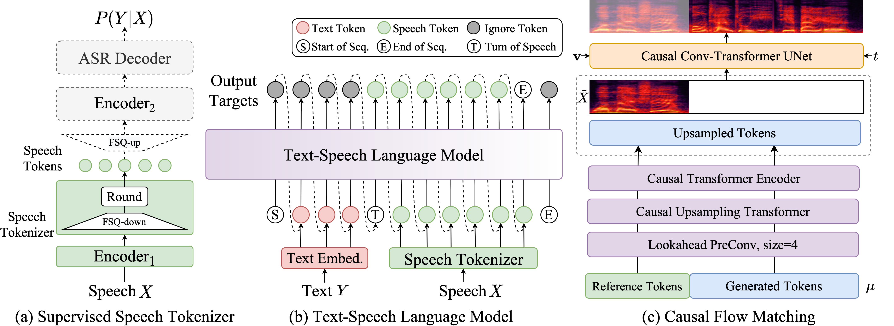

CosyVoice 2: Scalable Streaming Speech Synthesis with Large Language Models
[Paper] [Code] [Studio] [HuggingFace] [ModelScope]
FunAudioLLM Team
SpeechLab@Tongyi, Alibaba Group
Abstract: In our previous work, we proposed CosyVoice, a multilingual speech synthesis model based on supervised discrete speech token. By performing progressive semantic decoding with two popular generative models: language models (LMs) and Flow Matching, CosyVoice achieved high prosody naturalness, content consistency, and speaker similarity in speech in-context learning. Recently, there have been significant advancements in multi-modal large language models (LLMs), in which the response latency and real-time factor of speech synthesis play a crucial role in the interactive experience. Therefore, in this work, we introduce an improved streaming speech synthesis model, CosyVoice 2, with comprehensive and systematic optimizations. Firstly, we introduce finite-scalar quantization to improve the codebook utilization of speech tokens. Secondly, we simplify the model architecture of the text-speech LM, so as the pre-trained LLMs can be directly used as the backbone. Additionally, we also design a chunk-aware causal flow matching model to accommodate different synthesis scenarios. As a result, we can perform the streaming and non-streaming synthesis within a single model. By training on a large-scale multilingual dataset, CosyVoice 2 achieves human-comparable synthesis quality with very low response latency and real-time factor.

Ultra-Low Latency: CosyVoice 2.0 introduces a large-scale voice generation model technology that integrates offline and streaming modeling, supporting bidirectional streaming speech synthesis. The first packet synthesis latency can reach 150ms with minimal loss in quality.
High Accuracy: Compared to CosyVoice 1.0, CosyVoice 2.0 reduces pronunciation errors in synthesized audio by 30% to 50%. It achieves the current lowest character error rate on the hard test set of the Seed-TTS evaluation set.
Strong Stability: CosyVoice 2.0 ensures excellent consistency in timbre for zero-shot voice generation and cross-language speech synthesis. It shows significant improvement in cross-language synthesis compared to version 1.0.
Natural Experience: The prosody, sound quality, and emotional alignment of the synthesized audio in CosyVoice 2.0 have significantly improved compared to version 1.0. The MOS evaluation score increased from 5.4 to 5.53 (with a comparable score of 5.52 for a commercialized large-scale speech synthesis model). Additionally, CosyVoice 2.0 has upgraded its controllable audio generation capabilities, supporting more granular emotional controls and dialect accent adjustments.
Contents
Zero-shot In-context Generation
| Language | Prompt | Generated 1 | Generated 2 |
|---|---|---|---|
| ZH | 对，这就是我，万人敬仰的太乙真人，虽然有点婴儿肥，但也掩不住我逼人的帅气。 |
突然，身边一阵笑声。我看着他们，意气风发地挺直了胸膛，甩了甩那稍显肉感的双臂，轻笑道："我身上的肉，是为了掩饰我爆棚的魅力，否则，岂不吓坏了你们呢？" |
不少人从四面八方赶来，只为目睹我的风采。看，他们眼中流露出的崇敬，足以让我感到自豪。我微微一笑，挥手致意，心中默念着：责任重大，不容懈怠。 |
啊，事情怎么这么多啊，明天又要开会了啊，做不完啊，说了你又不听，听又不懂，懂又不做，做又做错，错又不认，认又不改，改又不服，不服又不说，你说叫我怎么办 |
这次机会让我能够在新的领域中不断学习和成长，同时也激励我去克服自身的不足。 |
我觉得这种运动其实不是说靠机会的，我觉得对每个人来讲，像我们歌手来讲，我觉得其实都是你要自己去努力，然后才可以达到自己的梦想。 |
|
周日被我射熄火了，所以今天是周一。 |
有一种撕心裂肺的感觉，是辣椒，我加了辣椒！ |
新的一周开始了，我计划好好利用这段时间来完成手头的工作和项目。 |
|
今夜的月光如此清亮，不做些什么真是浪费。随我一同去月下漫步吧，不许拒绝。 |
梯度是一个多变量微积分中的概念，用于描述一个标量场在某一点处的最大变化率，以及变化最快的方向。在物理学中，梯度通常用来表示某个物理量的空间变化情况。 |
在这宁静的夜晚，我们可以沿着小路慢慢走，感受微风拂面的轻柔，与自然融为一体。 |
|
| EN | I think people online have actually assembled videos showing every launch and it just gets like crazy fast as you get to twenty twenty three. So yeah, so we've done a nineteen three flight. We're now qualifying Falcon nine to be able to do forty flights. |
In the quest for sustainable energy, Tesla leads the charge; every electric vehicle on the road is an emissary saluting clearer skies, collectively weaving the tapestry of our planet's verdant future. |
From space exploration to subterranean tunnels, from AI to the neurotechnology revolution, my pursuit transcends mere technological frontiers; it's about carving out unprecedented realms of existence and progress for mankind. |
I'm so happy I got to do this. I really wanted to work with Tom Hooper. I know that he records live and he films and records your vocals live. It's such an interesting thing to me and I wanted to see him work. I had actually done screen tests for Les Mis. |
Every stage is a fresh adventure, and as the lights ignite, it's an unspoken pact between me and the audience, weaving unforgettable nights where dreams meet reality. |
Creating is my way of extracting magic from life's moments. Whether it's joy or tears, I embrace it all, transmuting those feelings into notes, with the hope of touching the depths of every soul. |
|
Maintaining your ability to learn translates into increased marketability, improved career optionsand higher salaries. |
Incorporating physics principles into Artificial Intelligence could also have a major impact on many experimental applications, such as designing AI methods that are more easily verifiable. |
DNA is the fundamental molecule for life on Earth, but it might soon become a key component in the construction of nanoelectronic devices as well. |
|
The device would work during the day as well, if you took steps to either block direct sunlightor point it away from the sun. |
However, surface effects become dominant as the materials in nanostructured devices become thinner, which means that surface waves may provide the thermal transport solution required. |
Scientists have developed an allseason smartroof coating that keeps homes warm during the winter and cool during the summer without consuming natural gas or electricity. |
|
| JP | 建築的な統一にもたらされることによって科学的となるのである。 |
それから食事のときには、彼等のうちから数人招きます。もっともそのときには、普通の人間も、二三人ずつ立派な人を招くことにします。 |
バーデン＝ヴュルテンベルク州の州都はシュトゥットガルトである |
二人は大歓迎というので、もう大喜びです |
もしや、意外の悪知恵をはたらかせて、名探偵の計略の裏をかくようなことはないでしょうか。ああ、なんとなく心がかりではありませんか。 |
ここまでしのびこんでくるようでは、もういよいよゆだんがなりません。刑事や店員の見はりなどは、このお化けのような怪盗には、少しのききめもありはしない |
|
| KO | 잡을 수 없는 저 하늘의 별도 잡자. |
그리고 등에 진 흙짐이 흡사히 벽돌 같아 등허리에서 땀이 버쩍 났다. |
이라고 버젓이 씌어 있는 것을 보니 동혁의 가슴은 울렁거리지 않을 수 없었다. |
지혜있는 자의 집에는 귀한 보배와 기름이 있으나 미련한 자는 이것을 다 삼켜버리느니라. |
우리 학교 근처의 술집이며 모든 상점 주인들은, 그에게 매깨나 안 얻어맞은 사람이 없었습니다. |
필요가 발명의 어머니라는 건 누구나 아는 사실이지만, 특허에도 유지비가 들어간다는 것도 유념해주세요. |
Cross-lingual In-context Generation
| ZH | EN | JP | KO |
|---|---|---|---|
CosyVoice迎来全面升级，提供更准、更稳、更快、 更好的语音生成能力。 |
CosyVoice is undergoing a comprehensive upgrade, providing more accurate, stable, faster, and better voice generation capabilities. |
CosyVoiceは全面的なアップグレードを迎え、より正確で、安定し、速く、さらに優れた音声生成能力を提供します。 |
CosyVoice가 전면 업그레이드를 맞이하여, 더 정확하고, 더 안정적이며, 더 빠르고, 더 나은 음성 생성 능력을 제공합니다. |
如果你对某件事情有强烈的感觉，你应该发声并采取行动。这是我生活的哲学。 |
If you feel strongly about something, you should speak up and take action. That's the philosophy I live by. |
何かに強く思い入れがあるなら、声を上げて行動すべきです。それが私の生きる哲学です。 |
어떤 것에 강한 감정을 느낀다면, 목소리를 내고 행동해야 합니다. 그것이 제가 사는 철학입니다. |
休息很重要，但也不能太放松警惕。 |
Resting is important, but you shouldn't let your guard down too much. |
休むことも大事だけど、気を抜きすぎてはダメよ。 |
쉬는 것도 중요하지만, 너무 방심해서는 안 돼. |
如果能对小事感到感激和满足，那他就是幸福的人。 |
If one knows how to be grateful and content with small things, then he is a happy person. |
小さなことに感謝し満足することができれば、その人は幸せな人です。 |
작은 것을 가지고도 고마워하고 만족할 줄 안다면 그는 행복한 사람이다. |
Mixed-lingual In-context Generation
| Prompt | CosyVoice1.0 | CosyVoice2.0 |
|---|---|---|
A chance to leave him alone but no, she just wanted to see him again. Anna you don't know how it feels to lose a sister, anna i'm sorry but your father asked me not to tell you anything. |
打开文档，首先打开您所使用的文档编辑软件，如Microsoft Word或WPS文档。 |
打开文档，首先打开您所使用的文档编辑软件，如Microsoft Word或WPS文档。 |
Some call me nature, others call me mother nature. I've been here for over four point five billion years, twenty two thousand five hundred times longer than you. |
今天早上开会时，经理说我们需要加强time management时间管理技能，这样才能更高效地完成任务。 |
今天早上开会时，经理说我们需要加强time management时间管理技能，这样才能更高效地完成任务。 |
晴空万里不如你心情愉悦，今天有什么开心的事吗？ |
你昨天的 presentation がよかったので, 오늘도 좋은 피드백을 받을 거예요。 |
你昨天的 presentation がよかったので, 오늘도 좋은 피드백을 받을 거예요。 |
그런 걸 별짓을 다해 가면서 억지루 시작을 했었지요. |
최근에 한국어를 배우기 시작했어, I find it fascinating, 特に文化の違いを理解するのが 재미있어. |
최근에 한국어를 배우기 시작했어, I find it fascinating, 特に文化の違いを理解するのが 재미있어. |
The world looks glorious in the snow. Pure white, like the light of the moon. A perfect backdrop for bloodshed. |
내일의 meeting は几点开始？一緒に行きますか? |
내일의 meeting は几点开始？一緒に行きますか? |
Emotionally Expressive Voice Generation
| Emotion | Prompt | Generated |
|---|---|---|
| Happy | 能和大家在一起，我好开心啊。 |
不久以后，王后果然生下了一个可爱的小公主。 |
| Sad | Dogs are sitting by the door. |
Their heads lowered and eyes drooping, letting out soft whimpers as they wait for their owner to return. |
| Surprise | 天呐，这么好一部小说，竟然出自一个怨碎的小作者之手。 |
进入小木屋后，里面竟然整齐排列着七张小小的床！ |
| Neutral | Dogs are sitting by the door. |
Their expressions steady and unmoved, simply observing the world outside with quiet interest. |
| Angry | 刚才还好好的，一眨眼又消失了，真的是要气死我了。 |
可恶的恶魔！你胡作非为，竟敢抓走公主。 |
Hardcase Voice Generation
| Text | CosyVoice1.0 | CosyVoice2.0 |
|---|---|---|
| 黑化肥发灰，灰化肥发黑，黑化肥挥发会发黑，灰化肥挥发会发灰。化肥会挥发，灰化肥挥发发黑会挥发，黑化肥挥发发灰会挥发。 | ||
| 煢煢孑立 沆瀣一氣 踽踽獨行 醍醐灌頂 綿綿瓜瓞 奉為圭臬 龍行龘龘 犄角旮旯 娉婷嫋挪 涕泗滂沱 呶呶不休 不稂不莠。 | ||
| 我等不及等不及等不及等不及等不及去去去去去玩水，我站站站站站在沙上沙上沙上沙上沙上的时候，脚快脚快脚快脚快脚快烧起来了。 | ||
| She sells seashells by the seashore. The shells she sells are surely seashells. So if she sells shells on the seashore, I'm sure she sells seashore shells. | ||
| Fuzzy Wuzzy was a bear. Fuzzy Wuzzy had no hair. Fuzzy Wuzzy wasn’t very fuzzy, was he? | ||
| Peter Piper picked a peck of pickled peppers. A peck of pickled peppers Peter Piper picked. If Peter Piper picked a peck of pickled peppers, where's the peck of pickled peppers Peter Piper picked? |
Instructed Voice Generation
Role-playing Control
| Text | CosyVoice1.0-Instruct | CosyVoice2.0 |
|---|---|---|
| 神秘<|endofprompt|>那座古老的城堡笼罩在神秘的雾气中，吸引着冒险者前去探索。 | ||
| 凶猛<|endofprompt|>战士们以凶猛的勇气冲锋陷阵，让敌人闻风丧胆。 | ||
| 好奇<|endofprompt|>对艺术的无限可能，她总是充满好奇，愿意尝试各种不同的创作形式。 | ||
| 优雅<|endofprompt|>那位钢琴家的演奏优雅动人，每一个音符都触动人心。 | ||
| 孤独<|endofprompt|>夜深人静时，她坐在窗前，总是感到一种莫名的孤独。 | ||
| 模仿机器人风格<|endofprompt|>在人工智能技术的支持下，我能够识别语音指令并执行相关操作。从播放音乐到控制智能家居设备，我的目标是让您的生活更加便捷和智能化。 | ||
| 我想听听你模仿小猪佩奇的语气。<|endofprompt|>大家好，我是小猪佩奇，今天我和苏西羊一起去公园，我们在秋千上荡来荡去，开心极了，还一起玩了捉迷藏，真是个快乐的下午。 | ||
| 一个活泼、爱冒险的小精灵，总是带着微笑和奇思妙想。<|endofprompt|>嘿，看那片云，它看起来像一只大象在跳舞！世界上总是有那么多神奇的事情在等着我们去发现呢！ | ||
| 一位权威、威严的古代将军，声音如洪钟，充满决断力。<|endofprompt|>战场上的胜利，不仅依赖于兵力，更取决于决策的果敢和士气的高昂。 | ||
| 一个忧郁的诗人，言语中总是透露出一丝哀愁和浪漫。<|endofprompt|>月光下的一切都是那么宁静，却也那么孤寂，正如我心中的那片荒芜。 | ||
| 一个天真烂漫的小孩，总是充满幻想和无尽的好奇心。<|endofprompt|>我觉得星星是夜晚的糖果，它们在天空中对我们眨着眼睛。 | ||
| 一个聪慧的侦探，善于发现细微之处，思维缜密。<|endofprompt|>在每一个不起眼的细节中，总隐藏着我们寻找的真相。 | ||
| A old sea captain, navigates life's storms with timeless wisdom and a heart of gold.<|endofprompt|>Hope is a good thing, maybe the best of things, and no good thing ever dies. | ||
| A stealthy shadow, moves with silent precision and unwavering focus.<|endofprompt|>In shadows, I find my strength; in silence, my power. |
Dialect Control
| Text | CosyVoice1.0-Instruct | CosyVoice2.0 |
|---|---|---|
| 用粤语说这句话<|endofprompt|>我最近迷上一部经典港剧，入面嗰啲对白真系有嚟头，时唔时就嚟句“唔该晒”，令我不禁莞尔。 | ||
| 用四川话说<|endofprompt|>前儿个去宽窄巷子喝盖碗茶，坐在小板凳上头听人摆龙门阵，简直安逸得很，不想走哦。 | ||
| 上海话<|endofprompt|>侬晓得伐，上礼拜我去淮海路的小马路上头捡漏，居然淘到一只老克勒的手表，侬讲得好伐？ | ||
| 郑州话<|endofprompt|>这阵子我在听豫剧，虽然有些地方唱词听不太明白，但音乐一响，耳朵就被吸住了。 | ||
| 长沙话<|endofprompt|>哎呀，前几天去坡子街吃夜宵，那口味虾辣得我直冒汗，嘴巴烧得像火，但就是停不下来，实在霸蛮。 | ||
| 天津话<|endofprompt|>今儿个去逛古文化街，那些个手工艺品五花八门，特别是杨柳青年画，色彩鲜艳得让人眼花缭乱。 |
Fine-grained Control
| Text | CosyVoice1.0-Instruct | CosyVoice2.0 |
|---|---|---|
| 在他讲述那个荒诞故事的过程中，他突然[laughter]停下来，因为他自己也被逗笑了[laughter]。 | ||
| 他搞的一个恶作剧，让大家<laughter>忍俊不禁</laughter>。 | ||
| 追求卓越不是终点，它需要你每天都<strong>付出</strong>和<strong>精进</strong>，最终才能达到巅峰。 | ||
| 当你用心去倾听一首音乐时[breath]，你会开始注意到那些细微的音符变化[breath]，并通过它们感受到音乐背后的情感。 | ||
| Oh wow [laughter], I thought I had seen it all until now [laughter]. Your ability to surprise never ceases to amaze me [laughter]. | ||
| With <strong>determination</strong> and <strong>focus</strong>, we can overcome <strong>any challenge</strong>. This project <strong>showcases</strong> that resilience. |
Speaking Style Control
| Text | CosyVoice1.0-Instruct | CosyVoice2.0 |
|---|---|---|
| 用开心的语气说<|endofprompt|>参加朋友的婚礼，看着新人幸福的笑脸，我感到无比开心。这样的爱与承诺，总是令人心生向往。 | ||
| 用伤心的语气说<|endofprompt|>收到拒信的那一刻，我感到无比伤心。虽然知道失败是成长的一部分，但仍然难以掩饰心中的失落。 | ||
| 用惊讶的语气说<|endofprompt|>走进家门，看见墙上挂满了我的照片，我惊讶得愣住了。原来家人悄悄为我准备了一个惊喜的纪念墙。 | ||
| 用生气的语气说<|endofprompt|>在交通高峰期，遭遇到一位鲁莽的司机插队，我感到非常生气。这种不文明的行为总让人无奈。 | ||
| 用恐惧的情感表达<|endofprompt|>看恐怖电影时，那突如其来的惊悚画面让我感到无比恐惧，心脏几乎要跳出胸口。 | ||
| 用恶心的情感表达<|endofprompt|>听到关于人体实验的细节描述，我感到非常恶心。这样的内容让人心生不适。 | ||
| 冷静<|endofprompt|>在争论中，我试图让自己冷静下来，理智地表达我的观点。只有冷静，才能有效沟通。 | ||
| 严肃<|endofprompt|>这个安全隐患问题必须严肃处理，我们不能掉以轻心，必须采取有效措施加以解决。 | ||
| 快速<|endofprompt|>这款新应用程序加载速度极快，让用户体验得到了极大的提升，使用起来更加流畅便捷。 | ||
| 非常快速<|endofprompt|>这款新应用程序加载速度极快，让用户体验得到了极大的提升，使用起来更加流畅便捷。 | ||
| 慢速<|endofprompt|>听着轻柔的音乐，我在画布上慢慢地涂抹色彩，让每一笔都充满灵感和思考。 | ||
| 非常慢速<|endofprompt|>听着轻柔的音乐，我在画布上慢慢地涂抹色彩，让每一笔都充满灵感和思考。 | ||
| Bubbling with happiness<|endofprompt|>The laughter of children playing in the park fills the air, and it reminds me of the simple joys of life. It's a beautiful day to be alive. | ||
| Overcome with sorrow<|endofprompt|>I miss my dear friend who moved away last month. The distance makes it hard to stay connected, and I feel a void in my daily life. | ||
| Feeling astonished<|endofprompt|>My friend just announced their engagement, and it caught me completely off guard. I'm thrilled for them but still processing the news. | ||
| Accelerated speech<|endofprompt|>I'm really excited about the new project, and I can't stop talking about all the ideas and possibilities we're exploring. | ||
| Speaking very fast<|endofprompt|>I can't believe how much I have to do today, and I'm trying to squeeze everything in before the deadline hits! | ||
| Speaking with patience<|endofprompt|>As we work through this problem, I'll go slowly to make sure we're both on the same page and understand each part. |
Target Speaker Fine-tune Models
| Speaker | English Generated | Chinese Generated |
|---|---|---|
| SPK-A | Traveling to new places not only broadens your horizons but also enriches your understanding of different cultures. |
有一天，小明去超市买东西，结账时发现没带钱包。他对收银员说：“我能不能用我的笑容支付？”收银员微笑着回答：“当然可以，但请记得，下次记得带上你的幽默感来补足差额。”两人相视而笑，小明最后还是朋友帮忙解了围。 |
| SPK-B | Reading is a journey that allows you to explore new worlds and meet fascinating characters without leaving your room. |
我好难过，最喜欢的偶像要毕业了，虽然支持她的决定，但还是会想念她的。 |
| SPK-C | After years of hard work and dedication, she finally achieved her dream of opening her own bakery. |
泉眼无声惜细流，树阴照水爱晴柔。小荷才露尖尖角，早有蜻蜓立上头。 |
| SPK-D | The importance of teamwork cannot be overstated together, we can accomplish much more than we could individually. |
东临碣石，以观沧海。水何澹澹，山岛竦峙。树木丛生，百草丰茂。秋风萧瑟，洪波涌起。日月之行，若出其中；星汉灿烂，若出其里。幸甚至哉，歌以咏志。 |
| SPK-E | The early morning sun cast a golden glow over the quiet town, promising a beautiful day ahead. |
深夜，小李独自在家，突然听到厨房传来轻微的响动。他慢慢靠近，只见冰箱门微微开启，里面透出幽暗的光。正当他准备查看时，冰箱内突然伸出一只手，紧紧抓住了他的手腕。小李惊恐地尖叫起来，但随后发现那只是自己之前挂在冰箱门上的万圣节装饰——一只塑料手。尽管如此，那一瞬间的心跳加速让他久久难以平静。 |
Disclaimer
The content provided above is for academic purposes only and is intended to demonstrate technical capabilities. Some examples are sourced from the internet. If any content infringes on your rights, please contact us to request its removal.